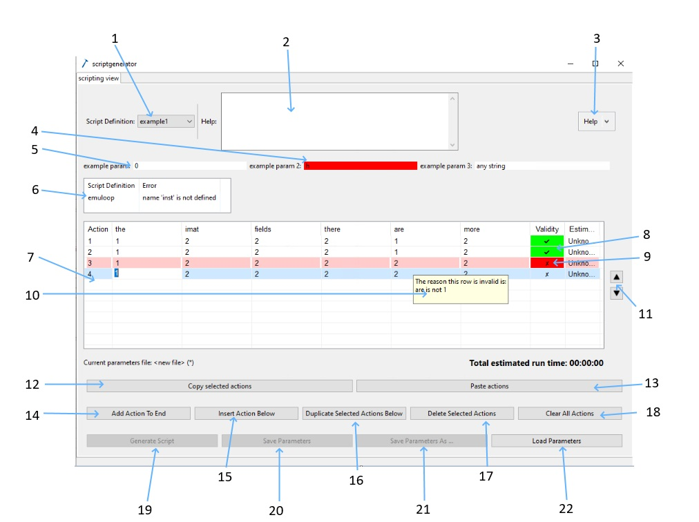
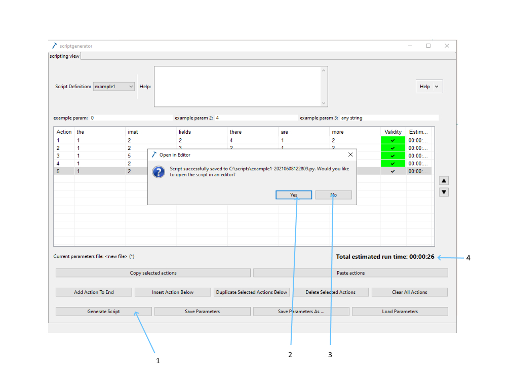

Using the Script Generator
Keyboard Shortcuts
Ctrl-click on multiple lines to select them all
Tab onto the next cell (tabbing from the last cell creates a new line)
FAQ
How do I copy and paste lines?
Select the line you want to copy (does not have to contiguous) and press `Ctrl+c` or use the "Copy Selected Actions" button to copy. Press `Ctrl+v` or use the "Paste Actions" button after selecting the line where you want to paste.
How do I delete multiple lines?
Select the lines individually (by holding `Ctrl` and clicking) or as a group (by holding `Shift` and clicking), then click the _Delete Selected Actions_ button or press the `Delete` key.
To delete all lines, click the Clear All Actions button or select all lines with Ctrl+a before deleting.
How do I insert an action at a given point?
Click the line you wish to insert the new line below and click the "Insert Action Below" button.
How do I add a new line to the end?
Click the "Add Action to End" button.
Can I tab between cells?
Yes, pressing tab to move between cells will move the focus from left to right and then onto the next line. If you tab off the end of the last line a new line will be created.
What does `Transfer Compatible Parameters` option do?
When this option is selected and the user selects a different script definition the actions are transferred if possible (i.e. when parameters match and they are not set to copy previous row). The matching parameters are transferred and the rest are populated with their default values. It is possible that none of the parameters can be transferred in which case the actions are cleared.
A tour of the UI

From the drop-down here you may select a script definitions to use to generate a script.
This text box displays the help provided by the currently selected script definition.
Help options, click the arrow to open a drop down allowing access to a link to this page and an about section which contains the current version, Java version, and the Java Path.
If the data entered in one of the global parameters text box is not the correct type it will highlight in red, mousing over the text box will display the error.
Text box to enter global parameters, these are only displayed if they are defined by the selected script definition.
This table may not appear in your script generator. However, if it does this means there have been errors loading some of your script definitions. The error message may tell you there is an error in one of your script definitions or there has been an error loading from a specific location.
The script generator table is to contain the experimental parameters that will be used by the generated script.
The validity column will contain a tick and be coloured green if the row is valid.
The validity column will contain a cross and be coloured a deeper red if the row is invalid. This is dependent on the script definitions parameters_valid method.
Hovering over a row that is invalid (highlighted in red and with a cross mark in the validation column) will display the reason this row is invalid. This is dependent on the script definitions parameters_valid method.
Select a row and press the up or down button to reorder rows.
Select an action or actions and click the “Copy selected actions” button to add the selected actions to the clipboard.
Select a row and click “Paste actions” to add the actions in the clipboard to the table.
Create a new action (row in the script generator table) at the bottom of the table with the “Add Action To End” button.
Select a row and click the “Insert Action Below” button to add a new action directly below the current action.
Select an action or actions and click the “Duplicate Selected Actions Below” button to create a copy of all currently selected actions directly below the last selected item.
Select an action or actions and click the “Delete Selected Actions” button to remove the selected actions from the table.
Click the “Clear All Actions” button to remove all actions from the table.
Click the “Generate Script” button to save out the script when all actions are ready. The button to generate a script is greyed out when the parameters aren’t valid.
Click the “Save Parameters” button to save the current parameters to a file that can be loaded in at another time. The button to generate a script is greyed out when the parameters aren’t valid.
Click the “Save Parameters As …” button to save the current parameters to a file that can be loaded in at another time, specifying the file to save to rather than saving to the file last saved to or loaded. The button to generate a script is greyed out when the parameters aren’t valid.
Click the “Load Parameters” button to load previously saved parameters in from a file.

When all parameters are valid the get validity errors button is greyed out.
All parameters are valid when there are ticks in the validity columns and no rows are red.
Press the “Generate Script” button to generate a script from your experimental parameters and get a file message box pop up.
When the script has been generated in the backend a user can provide a filename (without file path prefix or file extension).
They are provided with a create default filename which uses the script definition and a timestamp.
Can then save or save and open the file (at this stage if there is another file of the same name in the same place the user is asked if they want to overwrite).
Opens the file in notepad++ if notepad++ can be found.
Press the “Generate Script” button to generate a script from your experimental parameters and get a file message box pop up.
When the script has been generated in the backend a user can provide a filename (without file path prefix or file extension).
They are provided with a create default filename which uses the script definition and a timestamp.
Can then save or save and open the file (at this stage if there is another file of the same name in the same place the user is asked if they want to overwrite).
Opens the file in notepad++ if notepad++ can be found.
Do not open the file.
Estimated time for running of script, this is calculated based off the script definition.
Loading scripts into the scripting window
Say we have generated a script named “my_script.py”. We can open the scripting perspective in the ibex gui and type g.load_script("my_script.py"). This will then load a function called runscript() into the console which you can call by simply typing runscript() and pressing enter.